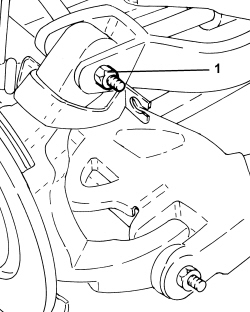

4450A40 REAR WHEEL GEOMETRY - CHECK USING OPTICAL EQUIPMENT, INCLUDES ADJUSTMENT IF NECESSARY
- Path
- Procedures > 44 SUSPENSION AND WHEELS > 4450 HUBS AND WHEELS > 4450A WHEEL GEOMETRY > 4450A40 REAR WHEEL GEOMETRY - CHECK USING OPTICAL EQUIPMENT, INCLUDES ADJUSTMENT IF NECESSARY
- Kind
- repair procedure (removal / refitting; the operation number is the code)
- Applies to
- all engines; all production periods
- Interactive page
- https://sloeber94.github.io/elrnDB/alfa/159/en/#/939010869
Applies to: engines: 1.8, 1.9 JTS, 2.2 JTS, 3.2 JTS, 1.9 JTD 16V, 2.4 JTD 20V; all production periods
- Check the rear wheel geometry after carrying out the following checks on the parts that affect the wheel geometry:
- vehicle in “STANDARD 0” load conditions (all engine fluids and approximately 8 litres of fuel in the tank) or “STANDARD A” conditions (vehicle unladen including spare wheel, tools, accessories and tanks/reservoirs topped up, full tank of fuel);
- Tyre inflation pressure.
Applies to: engines: 1.8, 1.9 JTS, 2.2 JTS, 3.2 JTS, 1.9 JTD 8V, 1.9 JTD 16V; all production periods
GEOMETRY CHECK
- Check the rear wheel geometry, ensuring that ground clearance D - C is within the following values.
Rear wheel geometry (standard 0) | ||
|---|---|---|
Distance D - C | 23 ± 5 | mm |
Rear wheel geometry (standard A) | ||
|---|---|---|
Distance D - C | 12 ± 5 | mm |

Applies to: engines: 2.4 JTD 20V; all production periods
GEOMETRY CHECK
- Check the rear wheel geometry, ensuring that ground clearance D - C is within the following values.
Rear wheel geometry (standard 0) | ||
|---|---|---|
Distance D - C | 21 ± 5 | mm |
Rear wheel geometry (standard A) | ||
|---|---|---|
Distance D - C | 10 ± 5 | mm |

Applies to: all engines; all production periods
TOE IN CHECK
- Check that the rear wheel half toe-in is within required limits.
REAR WHEEL SEMI TOE IN | ||
|---|---|---|
Standard 0 | 11’ ± 7’ | - |
REAR WHEEL SEMI TOE IN | ||
|---|---|---|
Standard A | 13’ ± 7’ | - |
- If the rear wheel half toe-in is not within the recommended figures, adjust it following the instructions given below.
CAMBER CHECK
1. Check that the rear wheel camber is within required limits.
REAR WHEEL CAMBER | ||
|---|---|---|
Standard 0 | -25’ ± 18’ | - |
REAR WHEEL CAMBER | ||
|---|---|---|
Standard A | -40’ ± 18’ | - |
- If the rear wheel camber is not within
Applies to: all engines; all production periods
ADJUSTING THE CAMBER AND TOE-IN
1. Undo the bolts securing the rear suspension longitudinal arms to the stub axles and adjust the screws to alter the rear wheel toe-in.
- Screw in the bolts securing the rear suspension longitudinal arms to the stub axles without tightening them.

Applies to: all engines; all production periods
1. Adjust the screws for the bolts securing the track control arms (camber rod) to adjust the camber of the rear wheels to the recommended value.
- Tighten the wishbone bolts (camber rod) to the specified torque.
Component | Fastening | dia | Value (daNm) | Validity |
|---|---|---|---|---|
Steering knuckel side camber rod | Bolt | M12 | 7.8 ÷ 9.3 + 30° |

Applies to: all engines; all production periods
1. Adjust the screws for the bolts securing the rear suspension longitudinal arms to the stub axles to adjust the toe in to the recommended value.
- Tighten the bolts securing the rear suspension longitudinal arms to the steering knuckles to the specified torque.
Component | Fastening | dia | Value (daNm) | Validity |
|---|---|---|---|---|
Steering knuckle side longitudinal arm (toe in) | Bolt | M14 | 9.5 ÷ 10.5 + 45° |